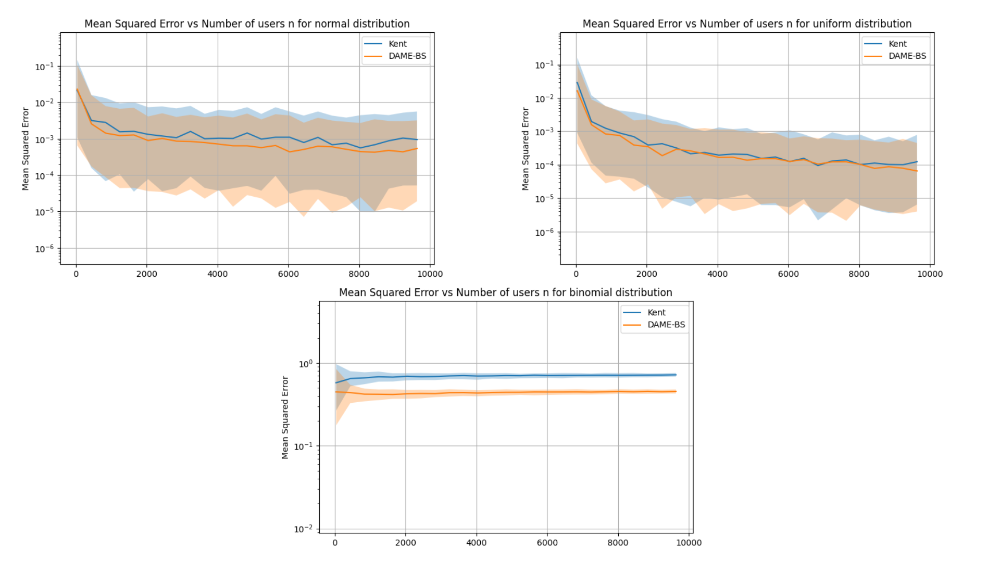
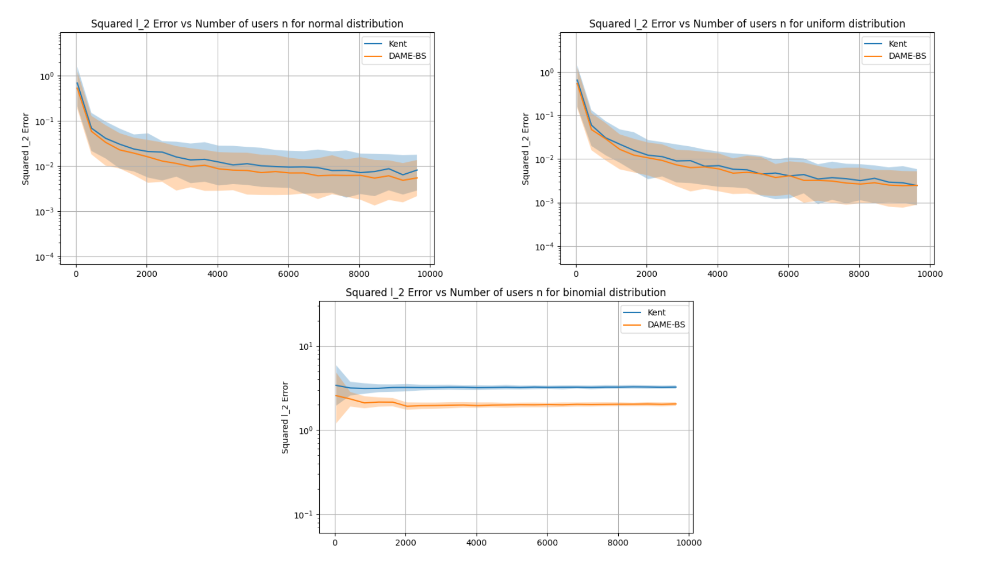
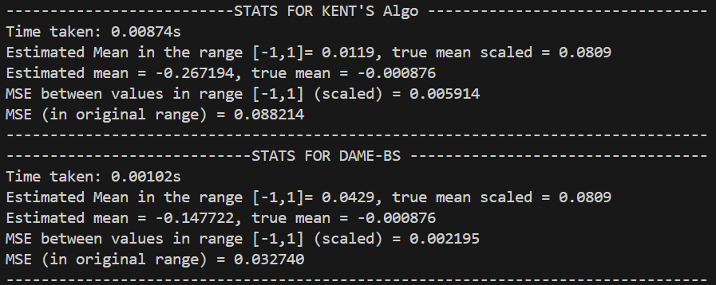

Experiments
This section presents experiments done to compare the DAME-BS algorithm and Kent’s algorithm for both univariate and multivariate cases.
Univariate Experiments
- experiments.univariate_experiment.compare_univariate_algorithms(n, m, alpha, distribution, true_mean, trials=50)[source]
Compare DAME‑BS and Kent univariate estimators over multiple trials.
- In each trial, this function:
Generates n users × m samples from the specified distribution centered (in expectation) at true_mean.
Scales all samples and true_mean into [-1,1].
Runs both the DAME‑BS estimator and the Kent estimator under privacy budget alpha.
Computes the squared error of each estimate vs. the scaled true_mean.
- Parameters:
n (int) – Number of users.
m (int) – Number of i.i.d. samples per user.
alpha (float) – Local differential privacy parameter.
distribution (str) –
- Which distribution to sample from. Supported Distributions:
”normal”
”uniform”
”student_t”
”binomial”
true_mean (float) – Ground-truth mean of the underlying distribution.
trials (int, optional) – Number of independent trials to average over (default: 50).
- Returns:
median_err_dame (float) – Median of squared errors from the DAME-BS estimator across trials.
lower_err_dame (float) – First decile of squared errors from the DAME-BS estimator across trials.
upper_err_dame (float) – Last decile of squared errors from the DAME-BS estimator across trials.
median_err_kent (float) – Median of squared errors from the Kent estimator across trials.
lower_err_kent (float) – First decile of squared errors from the Kent estimator across trials.
upper_err_kent (float) – Last decile of squared errors from the Kent estimator across trials.
- experiments.univariate_experiment.experiment_risk_vs_param_for_dist_univariate(distribution, param_to_vary='alpha', param_values=None, n=8000, m=20, alpha=0.6, true_mean=0.3, trials=50)[source]
For the specified parameter param_to_vary (α, n, or m), plots MSE of two univariate LDP estimators by DAME-BS and Kent’s algorithm.
For each value in param_values, this function runs compare_univariate_algorithms to obtain mean±std of squared error for both DAME‑BS and Kent estimators, and then calls plot_errorbars.
- Parameters:
distribution (str) – Supported Data distributions (“normal”, “uniform”, “student_t”, “binomial”).
param_to_vary (str, optional) – Which parameter to vary: “alpha”, “n”, or “m” (default: “alpha”).
param_values (array-like, optional) –
- Values to use for specified parameter to vary. If None, defaults are:
alpha → np.linspace(0.1, 1.0, 20)
n → range(500, 16000, 200)
m → range(7, 500, 5)
n (int, optional) – Base number of users (used when param_to_vary ≠ “n”; default: 8000).
m (int, optional) – Base samples per user (used when param_to_vary ≠ “m”; default: 20).
alpha (float, optional) – Base privacy parameter (used when param_to_vary ≠ “alpha”; default: 0.6).
true_mean (float, optional) – Ground‑truth mean (default: 0.3).
trials (int, optional) – Trials per setting (default: 50).
- Raises:
ValueError – If param_to_vary is not one of “alpha”, “n”, “m”.
- Returns:
Displays a plot of MSE vs. the chosen parameter for both estimators.
- Return type:
None
- experiments.univariate_experiment.generate_univariate_scaled_data(distribution, n, m, true_mean)[source]
Generate and linearly scale univariate user samples into [-1,1]. This function simulates n users each providing m samples drawn from a specified one‑dimensional distribution centered (in expectation) at true_mean, and then rescales all samples (and the true mean) to lie in the interval [-1, 1].
- Parameters:
distribution (str) –
Which distribution to sample from. Supported values are:
”normal” : Gaussian N(true_mean, 1^2)
”uniform” : Uniform U(true_mean - 1, true_mean + 1)
- ”student_t”Student’s t distribution with degrees of freedom = 3
and expected value shifted to true_mean
”binomial” : Binomial with number of trials as 50 and probability of success as true_mean/50
n (int) – Number of users (i.e., how many independent sample‐sets to generate).
m (int) – Number of i.i.d. samples per user.
true_mean (float) – The ground‐truth mean around which samples are generated; also used to compute the scaled “true_mean” output.
- Returns:
user_samples_scaled (ndarray of shape (n, m)) – The generated samples for all users, after rescaling linearly so the minimum across all samples maps to -1 and the maximum maps to +1.
true_mean_scaled (float) – The location of true_mean on the same linear map (i.e. the point in [-1,1] where the original true_mean falls).
Multivariate Experiments
- experiments.multivariate_experiment.compare_multivariate_algorithms(n, m, d, alpha, distribution, true_mean, trials=50)[source]
Compare two multivariate LDP mean‐estimators (Kent vs. DAME‑BS) over multiple trials.
- For each of trials iterations, this function:
Generates an (n × m × d) dataset from distribution with expected mean true_mean.
Scales every coordinate into [-1, 1] (and scales true_mean accordingly).
Runs the Kent multivariate estimator under privacy budget alpha.
Runs the DAME‑BS multivariate estimator under the same budget.
Computes the squared ℓ₂‐error of each estimate vs. the scaled true mean.
- Parameters:
n (int) – Number of users
m (int) – Number of samples per user
d (int) – Dimension of each sample
alpha (float) – Local differential privacy parameter.
distribution (str) – Sampling distribution: one of {“normal”, “uniform”, “student_t”, “binomial”}.
true_mean (array‐like of shape (d,)) – The ground‐truth mean vector in R^d.
trials (int, optional) – How many independent datasets (and runs) to average over (default: 50).
- Returns:
median_err_dame (float) – Median of squared ℓ₂‐errors from the DAME-BS estimator across trials.
lower_err_dame (float) – First decile of ℓ₂‐errors from the DAME-BS estimator across trials.
upper_err_dame (float) – Last decile of ℓ₂‐errors from the DAME-BS estimator across trials.
median_err_kent (float) – Median of squared ℓ₂‐errors from the Kent estimator across trials.
lower_err_kent (float) – First decile of ℓ₂‐errors from the Kent estimator across trials.
upper_err_kent (float) – Last decile of ℓ₂‐errors from the Kent estimator across trials.
- experiments.multivariate_experiment.experiment_risk_vs_param_for_dist_multivariate(distribution, param_to_vary='alpha', param_values=None, n=8000, m=20, d=10, alpha=0.6, true_mean=[0.1, 0.1, 0.1, 0.1, 0.1, 0.1, 0.1, 0.1, 0.1, 0.1], trials=50)[source]
For the specified parameter param_to_vary (α, n, m or d), plots ℓ₂‐errors of two univariate LDP estimators by DAME-BS and Kent’s algorithm.
For each value in param_values, this function runs compare_multivariate_algorithms to obtain mean±std of squared ℓ₂‐error for both DAME‑BS and Kent estimators, and then calls plot_errorbars.
- Parameters:
distribution (str) – Data distribution (“normal”, “uniform”, “student_t”, “binomial”).
param_to_vary (str, optional) – Which parameter to vary: “alpha”, “n”, or “m” (default: “alpha”).
param_values (array-like, optional) –
- Values to use for specified parameter to vary. If None, defaults are:
alpha -> np.linspace(0.1, 1.0, 20)
n -> range(500, 16000, 200)
m -> range(7, 500, 5)
d -> list(range(2,500,10))
n (int, optional) – Base number of users (used when param_to_vary ≠ “n”; default: 8000).
m (int, optional) – Base samples per user (used when param_to_vary ≠ “m”; default: 20).
alpha (float, optional) – Base privacy parameter (used when param_to_vary ≠ “alpha”; default: 0.6).
true_mean (float, optional) – Ground‑truth mean (default: 0.3).
trials (int, optional) – Trials per setting (default: 50).
- Raises:
ValueError – If param_to_vary is not one of “alpha”, “n”, “m”,”d.
- Returns:
Displays a plot of mean squared ℓ₂‐error vs. the chosen parameter for both estimators.
- Return type:
None
- experiments.multivariate_experiment.generate_multivariate_scaled_data(distribution, n, m, d, true_mean)[source]
Generates and scales multivariate samples into [-1,1]^d.
- Parameters:
distribution (str) – Supported Distributions {“normal”,”uniform”,”standard_t”,”binomial”}.
n (int) – Number of users (i.e. number of independent sample‐sets).
m (int) – Number of samples per user.
d (int) – Dimension of each dimension.
true_mean (array‐like of shape (d,)) – The ground‐truth mean vector.
- Returns:
user_samples_scaled (ndarray, shape (n, m, d)) – All user samples, scaled so each coordinate lies in [-1,1].
true_mean_scaled (ndarray, shape (d,)) – The true_mean vector under the same per‐coordinate scaling.
Real Data : MIMIC-III
- experiments.real_data_experiments.mimic.preprocess.scaling_data(user_samples)[source]
Scales user data into the range [-1, 1] and computes relevant statistics.
This function flattens all user data into a single list, finds the global minimum and maximum values, and then linearly scales all values for each user into the range [-1, 1] using the transformation:
scaled_value = (2 * (value - vmin) / (vmax - vmin)) - 1
- Parameters:
user_samples (dict) – A dictionary mapping users (keys) to lists of numeric samples (values),
- Returns:
user_samples_scaled (dict) – Dictionary with the same keys as user_samples, where each user’s values are scaled to the range [-1, 1].
desired_length (int) – The minimum number of samples across all users.
true_mean (float) – The mean of all unscaled sample values.
true_mean_scaled (float) – The mean of all scaled sample values.
vmin (float) – Minimum value among all unscaled sample values.
vmax (float) – Maximum value among all unscaled sample values.
- experiments.real_data_experiments.mimic.preprocess.truncate_and_shuffle(user_samples, desired_length)[source]
Truncates each user’s sample list to a fixed length and shuffles it randomly.
- Parameters:
user_samples (dict) – Dictionary mapping users to lists of samples.
desired_length (int) – The number of samples to retain per user.
- Returns:
final – Dictionary containing users with desired_length samples, where each user’s samples are truncated and shuffled.
- Return type:
dict
- experiments.real_data_experiments.mimic.run_experiment_mimic.main()[source]
This script runs a 500-trial comparison of Kent’s mean estimator and DAME-BS on real heart rate data from the MIMIC-III dataset.
- Steps:
Loads and filters MIMIC-III CHARTEVENTS for heart rate data.
Scales all values to [-1, 1] and truncates samples so each user have same number of samples.
Runs both algorithms across 500 trials.
Reports runtime, mean estimates, and MSE (in both scaled and original ranges).
Real Data : Stock Prices
- experiments.real_data_experiments.Stocks_Data.preprocess.batch_download_close_prices(tickers, period='1y', interval='1d', batch_size=100)[source]
This function downloads stock prices in batches using tikcers over period of 1 year with and interval of 1 day. It returns a dictionary with available close prices of stocks over a year present in the tickers list.
- experiments.real_data_experiments.Stocks_Data.preprocess.check_stationarity(returns_dict)[source]
Checks stationarity of time series of returns of stocks
- experiments.real_data_experiments.Stocks_Data.preprocess.compute_log_returns(prices_dict)[source]
Returns log of returns of stock prices.
- experiments.real_data_experiments.Stocks_Data.preprocess.filter_and_truncate(returns_dict, min_samples=230)[source]
Keep the time series with no Nans and having enough samples .
- experiments.real_data_experiments.Stocks_Data.preprocess.load_and_clean_tickers(n=4996)[source]
This function fetches and cleans the dataframe of 4998 tickers from nasdaq url and returns a clean list containing Symbols of tickers required to extract data from yfinance.
- experiments.real_data_experiments.Stocks_Data.preprocess.load_dict(path)[source]
Loads the dictionary data from .pkl file
- experiments.real_data_experiments.Stocks_Data.preprocess.save_dict(d, path)[source]
Saves the downloaded dictionary data in .pkl file
- experiments.real_data_experiments.Stocks_Data.preprocess.scale_series(series_dict)[source]
Scale all values of series to the range [-1,1].
- experiments.real_data_experiments.Stocks_Data.run_experiment_stock_prices.main()[source]
This script runs a 500-trial comparison of Kent’s mean estimator and DAME-BS on real stock prives data from the yfinance.
- Steps:
Loads ticker symbols.
Download available close prices of 1000 stocks using loaded tickers over the period of 1 year for each day.
Computes the log returns and check for stationarity of time series.
Filter out all the time series with Nan values and truncate them so each of them have same number of sample.
Scaled the data in range [-1,1].
Runs both algorithms across 500 trials.
Reports runtime, mean estimates, and MSE (in both scaled and original ranges).
Results
This section presents a comparison between the dame_bs algorithm and Kent’s algorithm in both the univariate and multivariate case. We generated datasets from three distributions— Normal, Uniform, and Binomial—with a mean of 0.1. All data points and the true mean were then scaled to the range [-1, 1]. The comparison was based on the mean squared error between the estimated mean and the scaled true mean across 200 trials.
Univariate case
Mean Squared Error vs privacy parameter alpha for the different distributions.

Mean Squared Error vs n (total number of users) for the different distributions.
{kind=link}
Mean Squared Error vs m (number of samples per user) for the different distributions.

Multivariate case
Mean Squared Error vs privacy parameter alpha for the different distributions.
{kind=link}
Mean Squared Error vs n (total number of users) for the different distributions.
{kind=link}
Mean Squared Error vs m (number of samples per user) for the different distributions.
{kind=link}
Real World Data
Stock Prices
We conducted experiments using a mean estimation algorithm to estimate the average price of stock data. In our setup, each stock was considered as a separate user, and its price history served as the sample data. For each stock, we used 249 data points and compared the performance of Kent’s algorithm with DAME-BS. The results below show the computation time and mean squared errors, both for scaled prices within the range [-1, 1] and for the actual price scale.

MIMIC-III (‘Medical Information Mart for Intensive Care’)
We conducted this experiment using MIMIC-III Dataset which consists of comprehensive clinical data of critical care admissions from 2001-2012 (Dataset : https://www.kaggle.com/datasets/asjad99/mimiciii). We used heart rate of patients over time. We could only find data for 48 patients with 11 samples per user. We conducted mean estimation using DAME-BS and Kent’s algorithm 500 times and report MSE (for both scaled and unscaled values) and average time taken by both algorithms. The results were limited in quality due to the small nummber of users and low number of samples per user.
{kind=link}